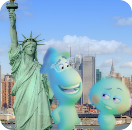
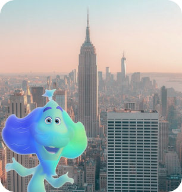
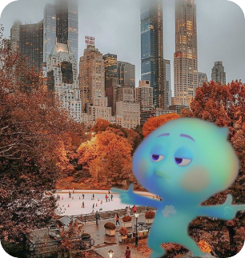
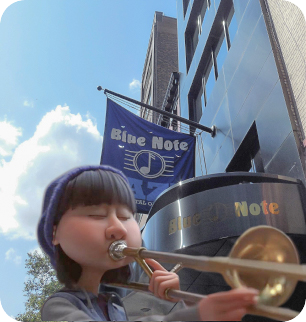

Nova York
Considerada uma espécie de “capital do mundo“, Nova York é também capital financeira dos Estados Unidos e a mais importante cidade do país. Com um horizonte conhecido em qualquer parte do mundo, a cidade oferece muita diversão e atrações de todos os tipos. Em cada estação do ano você conhece uma Nova York diferente e mais encantadora! Ansioso para conhecer alguns dos cenários que compõem Soul?
Pontos Turísticos
Ponte do Brooklyn
Brooklyn Bridge, New York, NY 10038, EUA
Sobre: Inaugurada em 1883, é a mais famosa de NY. Visitar a ponte do Brooklyn já é tradição. A travessia dos 1.800 metros podem ser feitos a pé, de bicicleta ou de carro. A arquitetura e a paisagem fazem a visita valer a pena!
Valor do Ingresso: Gratuito
Duração: Livre
Horário de Funcionamento: Aberto 24h
Melhor época para visitar: Primavera e Outono

Empire State Building
20 W 34th St, New York, NY 10001, EUA
Sobre: Suba no mirante do Empire State, um dos edificios mais famosos do mundo, e desfrute das vistas únicas de Nova York a 320 metros de altura.
Valor do Ingresso: Adulto: $42 | Idoso: $40 | Criança: $36
Duração: Não há limite de tempo
Horário de Funcionamento: 13h às 22h
Melhor época para visitar: Primavera e Outono

Central Park
8th Ave to 5th Ave or 110th St to 59th St, New York, NY, EUA
Sobre: Independente da época do ano, o Central Park é para obrigatória de todo turista. Uma imensidão de verde no coração da cidade de NY. O parque oferece muitas atividades aos visitantes!
Valor do Ingresso: Gratuito
Duração: Livre
Horário de Funcionamento: 06h às 01h
Melhor época para visitar: Qualquer época do ano

Blue Note Jazz Club
131 W 3rd St, New York, NY 10012, EUA
Sobre: Criado em 1981, o clube Blue Note é um dos principais clubes de jazz do mundo e uma instituição cultural em Greenwich Village. A programação é bastante intensa e os preços variam de acordo com o artista que se apresentará na noite.
Valor do Ingresso: A partir de $30
Duração: Não há limite de tempo
Horário de Funcionamento: Seg a Qui das 18h às 00h | Sexta das 18h às 02h | Sáb das 10h às 02h | Dom das 10h às 00h
Melhor época para visitar: Qualquer época do ano